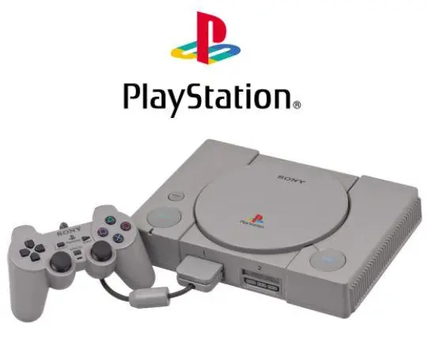
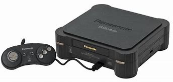
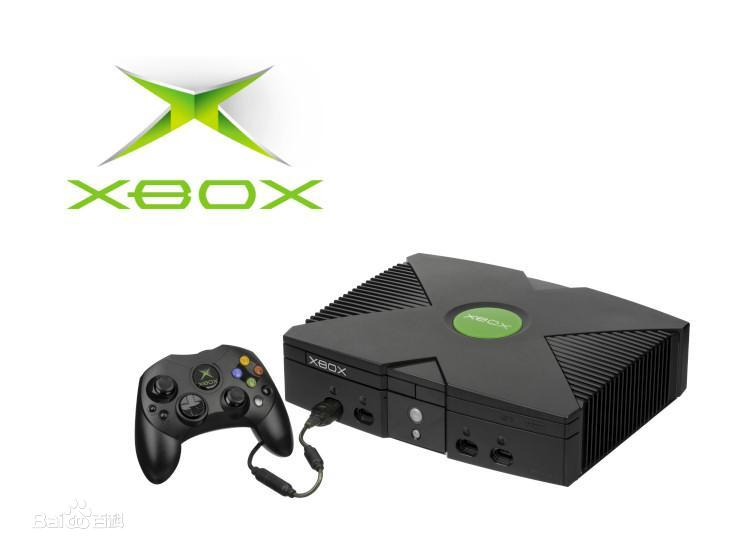

电子游戏（electronic Games）又称电玩游戏，是指所有依托于电子设备平台而运行的交互游戏，狭义的时候称视频游戏。根据运行媒介的不同分为五类：主机游戏（狭义的，此处专指家用机游戏，又称视频游戏控制台）、掌机游戏、街机游戏、电脑游戏及手机游戏。
国外有时包括用于赌博的老虎机和柏青哥以及弹珠台。完善的电子游戏在20世纪末出现，改变了人类进行游戏的行为方式和对游戏一词的定义，属于一种随科技发展而诞生的文化活动。
电子游戏也可代指“电子游戏软件”。利用电子设备为媒介进行游戏活动的行为。始于20世纪60年代末的美国，刚开始在街机或者是视频游戏控制台（家用控制台，掌上控制台）上发展，后来出现了个人计算机和移动设备平台上的游戏。
电子游戏主要由传统游戏活动的继承性游戏：如足球、棒球、国际象棋的电子游戏，组字和数字的游戏。也具有传统游戏所不具有的功能：幻想世界的冒险、战争、格斗等。
PlayStation游戏机
PlayStation（日语：プレイステーション，缩写为“PS”）是索尼互动娱乐有限公司研发和发售的家用游戏机，于1994年12月3日在日本首发 [72] 。 2000年7月7日发行了名为PS one的轻薄型号 [75] ，2006年3月23日PS停产 [36] ，全球总销量为1亿249万台 [79] 。该主机是PlayStation系列家用机的第一款。作为第五世代游戏机，与任天堂的N64和世嘉的土星等其他第五世代游戏机竞争 [76] 。 PlayStation外形为灰色，尺寸为270×60×188毫米（长、高、宽）。 主要硬件配置为32位RISC CPU、32位Sony GPU、16位Sony SPU、双倍速CD-ROM光驱。有三种功能：电子游戏娱乐、播放音乐CD、部分机型能够播放VCD。 其后续机种PlayStation 2于2000年3月4日发行
3Do游戏机
3DO是于1992年在特里普·霍金斯发起下，松下电器的母公司（Matsushita）、美国电报电话公司（AT&T）、时代华纳（Time Warner）、美国环球影业公司（MCA）、EA等共同出资成立的公司。 与松下等公司合作制作发行了同名的游戏主机。 公司代表游戏有《玩具兵大战》、《魔法门》、《英雄无敌》。
Xbox游戏机
Xbox是由美国微软公司开发并于2001年发售的一款家用电视游戏机。 [1] Xbox和SONY的PlayStation 2，以及任天堂公司的NGC形成了三足鼎立的局面。 内装英特尔公司制造的Pentium III基本中央处理器、内建8GB容量的硬盘与DVD-ROM光驱、以太网路连接埠，支援网络的能力，与个人电脑架构相似。控制器端口形状与USB规格不相同。 从硬件性能指标上，Xbox属于当时的“三大主机”。 Xbox Live是Xbox及其后的第二代主机Xbox 360和第三代主机Xbox one的多人在线对战平台。
首页